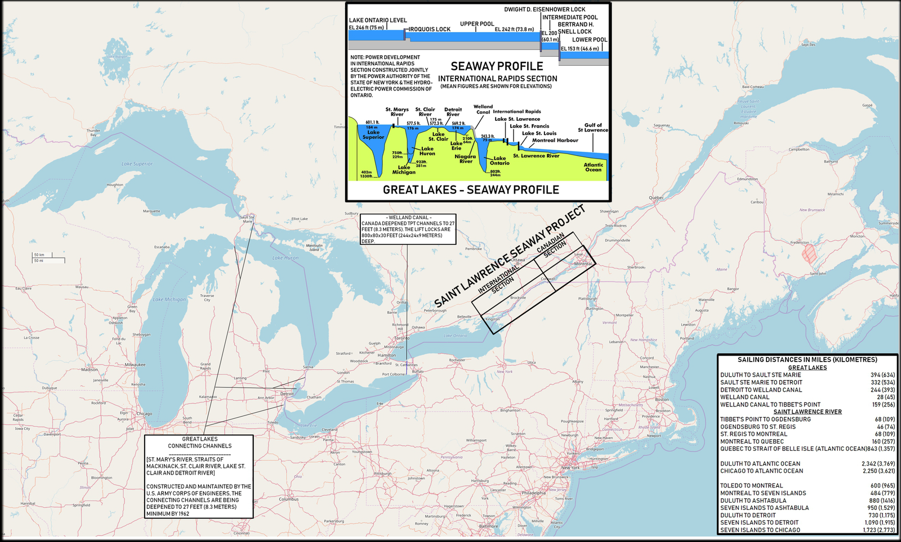
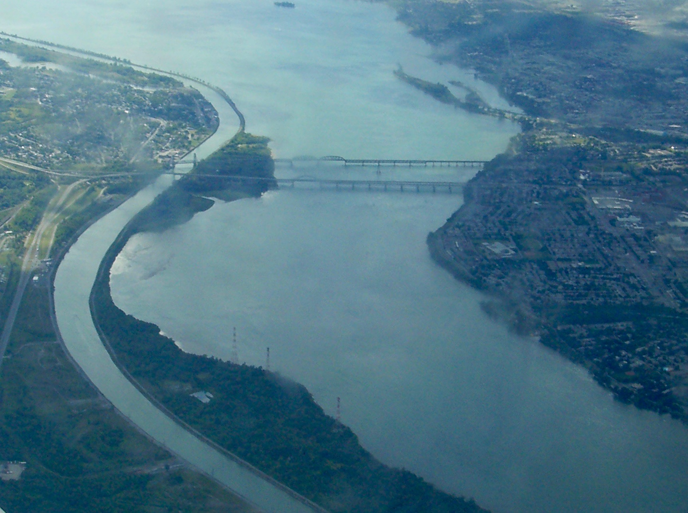

St. Lawrence Seaway
 The Saint Lawrence Seaway (French: la Voie Maritime du Saint-Laurent) is a system of locks, canals, and channels in Canada and the United States that permits oceangoing vessels to travel from the Atlantic Ocean to the Great Lakes of North America, as far inland as Duluth, Minnesota, at the western end of Lake Superior. The seaway is named for the Saint Lawrence River, which flows from Lake Ontario to the Atlantic Ocean. Legally, the seaway extends from Montreal, Quebec, to Lake Erie, and includes the Welland Canal.
The Saint Lawrence Seaway (French: la Voie Maritime du Saint-Laurent) is a system of locks, canals, and channels in Canada and the United States that permits oceangoing vessels to travel from the Atlantic Ocean to the Great Lakes of North America, as far inland as Duluth, Minnesota, at the western end of Lake Superior. The seaway is named for the Saint Lawrence River, which flows from Lake Ontario to the Atlantic Ocean. Legally, the seaway extends from Montreal, Quebec, to Lake Erie, and includes the Welland Canal.
The Saint Lawrence River portion of the seaway is not a continuous canal; rather, it consists of several stretches of navigable channels within the river, a number of locks, and canals along the banks of the Saint Lawrence River to bypass several rapids and dams. A number of the locks are managed by the St. Lawrence Seaway Management Corporation in Canada, and others in the United States by the Saint Lawrence Seaway Development Corporation; the two bodies together advertise the seaway as part of "Highway H2O". The section of the river from Montreal to the Atlantic is under Canadian jurisdiction, regulated by the offices of Transport Canada in the Port of Quebec.
History
The Saint Lawrence Seaway was preceded by several other canals. In 1871, locks on the Saint Lawrence allowed transit of vessels 186 ft (57 m) long, 44 ft 6 in (13.56 m) wide, and 9 ft (2.7 m) deep. The First Welland Canal, constructed between 1824 and 1829, had a minimum lock size of 110 ft (34 m) long, 22 ft (6.7 m) wide, and 8 ft (2.4 m) deep, but it was generally too small to allow passage of larger oceangoing ships. The Welland Canal's minimum lock size was increased to 150 ft (46 m) long, 26.5 ft (8.1 m) wide, and 9 ft (2.7 m) deep for the Second Welland Canal; to 270 ft (82 m) long, 45 ft (14 m) wide, and 14 ft (4.3 m) deep with the Third Welland Canal; and to 766 ft (233 m) long, 80 ft (24 m) wide, and 30 ft (9.1 m) deep for the current (Fourth) Welland Canal. 
The first proposals for a binational comprehensive deep waterway along the Saint Lawrence were made in the 1890s. In the following decades, developers proposed a hydropower project as inseparable from the seaway; the various governments and seaway supporters believed the deeper water to be created by the hydro project was necessary to make the seaway channels feasible for oceangoing ships. U.S. proposals for development up to and including the First World War met with little interest from the Canadian federal government. But the two national governments submitted Saint Lawrence plans to a group for study. By the early 1920s, both The Wooten-Bowden Report and the International Joint Commission recommended the project.
Although the Liberal Prime Minister William Lyon Mackenzie King was reluctant to proceed, in part because of opposition to the project in Quebec, in 1932 he and the U.S. representative signed a treaty of intent. This treaty was submitted to the U.S. Senate in November 1932 and hearings continued until a vote was taken on March 14, 1934. The majority voted in favor of the treaty, but it failed to gain the necessary two-thirds vote for ratification. Later attempts between the governments in the 1930s to forge an agreement came to naught due to opposition by the Ontario government of Mitchell Hepburn and the government of Quebec. In 1936, John C. Beukema, head of the Great Lakes Harbors Association and a member of the Great Lakes Tidewater Commission, was among a delegation of eight from the Great Lakes states to meet at the White House with US President Franklin D. Roosevelt to obtain his support for the seaway concept.
Beukema and Saint Lawrence Seaway proponents were convinced a nautical link would lead to development of the communities and economies of the Great Lakes region by permitting the passage of oceangoing ships. In this period, exports of grain, along with other commodities, to Europe were an important part of the national economy. Negotiations on the treaty resumed in 1938, and by January 1940 substantial agreement was reached between Canada and the United States. By 1941, President Roosevelt and Prime Minister Mackenzie King made an executive agreement to build the joint hydro and navigation works, but this failed to receive the assent of the U.S. Congress. Proposals for the seaway were met with resistance; the primary opposition came from interests representing harbors on the Atlantic and Gulf coasts and internal waterways and from the railroad associations. The railroads carried freight and goods between the coastal ports and the Great Lakes cities.
After 1945, proposals to introduce tolls to the seaway were not sufficient to gain support for the project by the U.S. Congress. Growing impatient, and with Ontario desperate for the power to be generated by hydroelectricity, Canada began to consider developing the project alone. This seized the imagination of Canadians, engendering a groundswell of nationalism around the Saint Lawrence. Canadian Prime Minister Louis St. Laurent advised U.S. President Harry S. Truman on September 28, 1951, that Canada was unwilling to wait for the United States and would build a seaway alone; the Canadian Parliament authorized the founding of the Saint Lawrence Seaway Authority on December 21 of that year. Fueled by this support, Saint Laurent's administration decided during 1951 and 1952 to construct the waterway alone, combined with the Moses-Saunders Power Dam. (This became the joint responsibility of Ontario and New York: as a hydropower dam would change the water levels, it required bilateral cooperation.)
The International Joint Commission issued an order of approval for joint construction of the dam in October 1952. U.S. Senate debate on the bill began on January 12, 1953, and the bill emerged from the House of Representatives Committee of Public Works on February 22, 1954. It received approval by the Senate and the House by May 1954. The first positive action to enlarge the seaway was taken on May 13, 1954, when U.S. President Dwight D. Eisenhower signed the Wiley-Dondero Seaway Act to authorize joint construction and establish the Saint Lawrence Seaway Development Corporation as the U.S. authority. The need for cheap haulage of Quebec-Labrador iron ore was one of the arguments that finally swung the balance in favor of the seaway. Groundbreaking ceremonies took place in Massena, New York, on August 10, 1954. That year John C. Beukema was appointed by Eisenhower to the five-member St. Lawrence Seaway Advisory Board.
In May 1957, the Connecting Channels Project was begun by the United States Army Corps of Engineers. By 1959, Beukema was on board the U.S. Coast Guard cutter Maple for the first trip through the U.S. locks, which opened up the Great Lakes to oceangoing ships. On April 25, 1959, large, deep-draft ocean vessels began streaming to the heart of the North American continent through the seaway, a project supported by every administration from Woodrow Wilson through Eisenhower.
In the United States, Dr. N.R. Danelian (who was the director of the 13-volume Saint Lawrence Seaway Survey in the U.S. Department of Navigation (1932–63)), worked with the U.S. Secretary of State on Canadian-U.S. issues regarding the seaway, persevering through 15 years to gain passage by Congress of the Seaway Act. He later became president of the Great Lakes St. Lawrence Association to promote seaway development to benefit the American heartland. The seaway was heavily promoted by the Eisenhower administration, which had been concerned with a lack of US control.
The seaway opened in 1959 and cost $470 million, $336.2 million of which was paid by the Canadian government. Elizabeth II, Queen of Canada and American President Dwight D. Eisenhower formally opened the seaway with a short cruise aboard the royal yacht HMY Britannia after addressing crowds in Saint-Lambert, Quebec.  22,000 workers were employed at one time or another on the project, a 2,300-mile-long superhighway for ocean freighters. Port of Milwaukee director Harry C. Brockel forecast just before the Seaway opened in 1959 that "The St. Lawrence Seaway will be the greatest single development of this century in its effects on Milwaukee's future growth and prosperity." Lester Olsen, president of the Milwaukee Association of Commerce, said, "The magnitude and potential of the St. Lawrence Seaway and the power project stir the imagination of the world."
The seaway's opening is often credited with making the Erie Canal obsolete and causing the severe economic decline of several cities along the canal in Upstate New York. By the turn of the 20th century, the Erie Canal had been largely supplanted by the railroads, which had been constructed across New York and could carry freight more quickly and cheaply. Upstate New York's economic decline was precipitated by numerous factors, only some of which had to do with the Saint Lawrence Seaway.
Under the Canada Marine Act (1998), the Canadian portions of the seaway were set up with a non-profit corporate structure; this legislation also introduced changes to federal ports.Great Lakes and seaway shipping generates $3.4 billion in business revenue annually in the United States. In 2002, ships moved 222 million tons of cargo through the seaway. Overseas shipments, mostly of inbound steel and outbound grain, accounted for 15.4 million tons, or 6.9%, of the total cargo moved. In 2004, seaway grain exports accounted for about 3.6% of U.S. overseas grain shipments, according to the U.S. Grains Council. In a typical year, seaway steel imports account for around 6% of the U.S. annual total. The toll revenue obtained from ocean vessels is about 25–30% of cargo revenue. The Port of Duluth shipped just over 2.5 million metric tons of grain, which is less than the port typically moved in the decade before the seaway opened Lake Superior to deep-draft oceangoing vessels in 1959.
International changes have affected shipping through the seaway. Europe is no longer a major grain importer; large U.S. export shipments are now going to South America, Asia, and Africa. These destinations make Gulf and West Coast ports more critical to 21st-century grain exports. Referring to the seaway project, a retired Iowa State University economics professor who specialized in transportation issues said, "It probably did make sense, at about the time it (the Seaway) was constructed and conceived, but since then everything has changed."
Certain seaway users have been concerned about the low water levels of the Great Lakes that have been recorded since 2010
Locks in the Saint Lawrence River
There are seven locks in the Saint Lawrence River portion of the seaway. From downstream to upstream they are:
- St. Lambert Lock—Saint Lambert, QC
- Côte Ste. Catherine Lock—Sainte-Catherine, QC
- Beauharnois Locks (two locks)—Melocheville, QC, at 45°18′12.6″N 73°55′36.5″W and 45°19′0.1″N 73°55′6.6″W
- Snell Lock—Massena, NY
- Eisenhower Lock—Massena, NY
- Iroquois Lock—Iroquois, ON, at 44°49′48″N 75°18′46.8″W

- Lake Ontario is 243 ft (74.1 m) above sea level.
- The drop through Iroquois Lock is 1 ft (0.3 m).
- Lake St. Lawrence is 242 ft (73.8 m) above sea level.
- The drop through Eisenhower Lock is 38 ft (11.6 m).
- The Wiley-Dondero Canal is 204 ft (62.2 m) above sea level.
- The drop through Snell Lock is 45 ft (13.7 m).
- Lake St. Francis is 159 ft (48.5 m) above sea level .
- The drop through Upper Beauharnois Lock is 41 ft (12.5 m).
- The Beauharnois Canal is 118 ft (36.0 m) above sea level.
- The drop through Lower Beauharnois Lock is 41 ft (12.5 m).
- Lake St. Louis is 77 ft (23.5 m) above sea level.
- The drop through Côte Ste. Catherine Lock is 30 ft (9.1 m).
- Laprairie Basin is 47 ft (14.3 m) above sea level.
- The drop through St. Lambert Lock is 15 ft (4.6 m).
- The drop through the Lachine Rapids is a few feet.
- Montreal Harbour is approximately 30 ft (9.1 m) above sea level.

Ecology
To create a navigable channel through the Long Sault rapids and to allow hydroelectric stations to be established immediately upriver from Cornwall, Ontario, and Massena, New York, Lake St. Lawrence was created behind a dam. This required the condemnation and acquisition by the government of all the properties of six villages and three hamlets in Ontario; these are now collectively known as The Lost Villages. The area was flooded on July 1, 1958, creating the lake. There was also inundation on the New York side of the border, and the village of Louisville Landing was submerged.
A notable adverse environmental effect of the operation of the seaway has been the introduction of numerous invasive species of aquatic animals into the Great Lakes Basin. The zebra mussel has been most damaging in the Great Lakes and through its invasion of related rivers, waterways, and city water facilities.
 The seaway, along with the Saint Lawrence River it passes through, also provides opportunities for outdoor recreation, such as boating, camping, fishing, and scuba diving. Invasive species and artificial water level controls imposed by the seaway have had a negative impact on recreational fishing. Of note, the Old Power House near Lock 23 (near Morrisburg, Ontario) became an attractive site for scuba divers. The submerged stone building has become covered with barnacles and is home to an abundance of underwater life.
The seaway, along with the Saint Lawrence River it passes through, also provides opportunities for outdoor recreation, such as boating, camping, fishing, and scuba diving. Invasive species and artificial water level controls imposed by the seaway have had a negative impact on recreational fishing. Of note, the Old Power House near Lock 23 (near Morrisburg, Ontario) became an attractive site for scuba divers. The submerged stone building has become covered with barnacles and is home to an abundance of underwater life.
The seaway passes through the Saint Lawrence River, which provides a number of divable shipwrecks within recreational scuba limits (shallower than 130 ft (40 m)). The region also offers technical diving, with some wrecks lying at 240 ft (73 m). The water temperature can be as warm as 75 °F (24 °C) during the mid- to late summer months. The first 10 ft (3 m) of Lake Ontario is warmed and enters the Saint Lawrence River, as the fast-moving water body has no thermocline circulation.
On July 12, 2010, Richelieu (owned by Canada Steamship Lines) ran aground after losing power near the Côte-Sainte-Catherine lock. The grounding punctured a fuel tank, spilling an estimated 200 tonnes of diesel fuel, covering approximately 500 m2. The seaway and lock were shut down to help contain the spill.